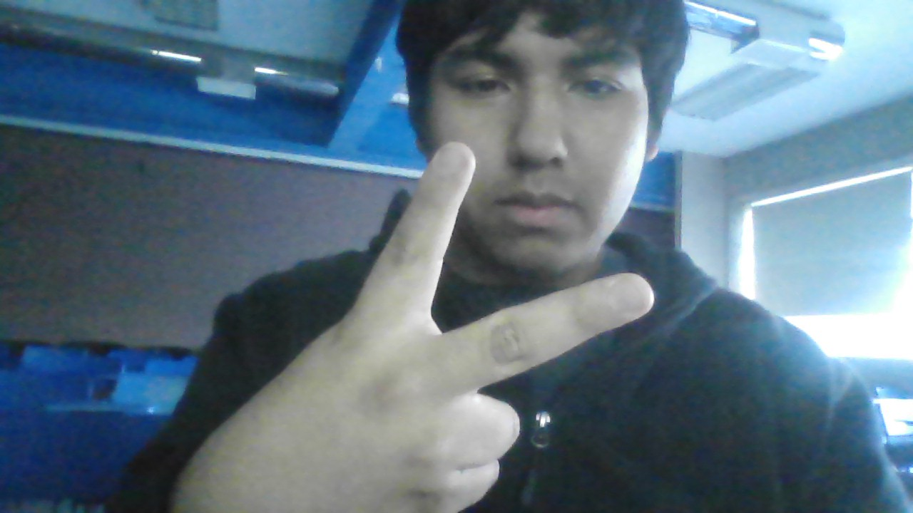

Mi nombre
Vicente Palacio
Sobre mí
Soy estudiante de Ingeniería Civil Informática, actualmente en etapa de formación. Me interesa especialmente la programación y la exploración de áreas como robótica, videojuegos y bases de datos. Busco desarrollar soluciones que sean útiles, accesibles y visualmente claras, combinando tecnología y creatividad para facilitar la vida cotidiana y generar un impacto positivo en las personas.
Lo que hago
Desarrollo experiencias web con HTML y JavaScript, procurando que sean accesibles, útiles y visualmente claras. Me interesa crear soluciones que faciliten la vida cotidiana y comunicar temas de salud de forma cercana.